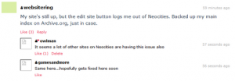

Madville

Madville is a personal website created by Roger Bender "TheMidnightSnack" on 2018-07-20. Madville is expressed as being strictly a hobbyist website, exclaiming that there is "Nothing to see here, Folks".(https://madville.neocities.org/index.html) The website features a collection of links, a list of various media the author highlights, and other various articles. The site is notable for notable for being neither HTML5 or CSS3 compliant, as well as lacking proper screen sizing at lower screen resolutions.
History
Madville is alluded to be created around 1995.(https://madville.neocities.org/about.html) It is implied that the creator created an actual GeoCities page that was transfered over to Neocities later on. There is no evidence of this, however, as the oldest archived copy of the site only dates back to 2019-04-09.(https://web.archive.org/web/20190409191342/https://madville.neocities.org/)
Webrings
Madville is a member of four webrings, the Yoohoo Webring, the null Webring, the New Web Webring, and Ringlink, a webring hosted by WSMZ.
Awards and Nominations
Madville has been featured on JAUP since June of 2019, being labeled alongside the third title line of the website.(http://www.geocities.ws/jaup/jaup.htm)